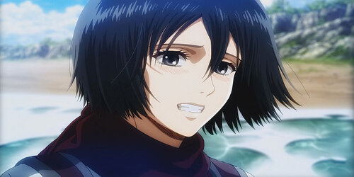

La Vie de Hajime Isayama
Hajime Isayama est né le 29 août 1986 dans la ville d'Ōyama, préfecture de Ōita, au Japon. Son rêve de devenir mangaka a pris forme lorsqu'il a été inspiré par des auteurs de renom tels que Hayao Miyazaki et Yōichi Takahashi.
En 2008, il a publié le premier chapitre de "L'Attaque des Titans" (Shingeki no Kyojin) dans le magazine Bessatsu Shōnen de Kodansha, marquant le début de sa carrière de mangaka. Le manga est devenu un énorme succès, obtenant une adaptation en anime en 2013 qui a également connu un succès phénoménal.
Personnages Principaux de "L'Attaque des Titans"
Eren Jeager

Mikasa Ackerman
Armin Arlert